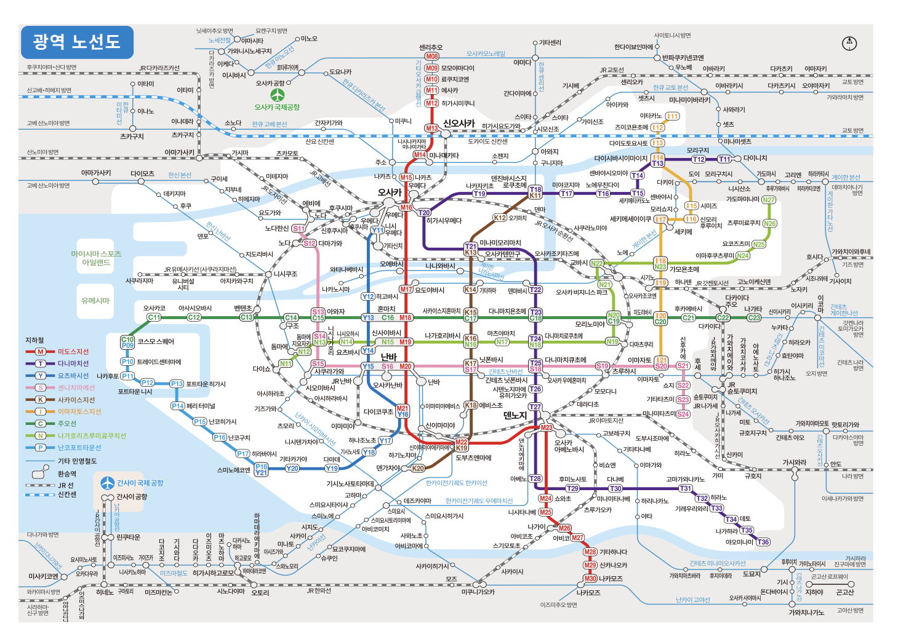

NORI
OSAKA IN ONE TAP
TAP TO START
NORI
↺ 초기화
출발
×
도착
×
↑↓ 출발 ↔ 도착 바꾸기

🗺️ 노선도 이미지를 찾을 수 없습니다
이 HTML과 같은 폴더에
osaka_map.PNG
파일이 있어야 합니다.
지도 위 역을 직접 탭하거나 위에서 검색하세요
+
−
⊙
출발 · 도착을 선택해주세요
-
→
-
×
⚡ 최단시간
🔄 최소환승